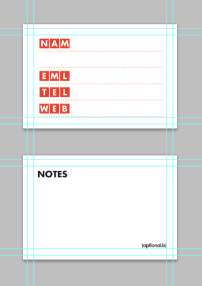
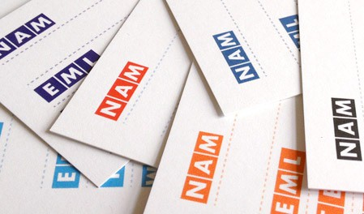

I’ve written about business cards before: Building a Better Business Card. I admit that I don’t always follow my own advice, but this article isn’t about my business cards, it’s about yours, or more precicely your lack of them!
I know this is a digital world, people “bump” their phones or high-four each other and pass contact details with RFID chips, but maybe I’m old fashion in thinking that having a business card in hand shows your personality, your attention to detail, your care and consideration for your brand.
I do my best to always carry around business cards and not in my wallet where they get squished and bent and rub against all the other cards and get dirty. No, I carry them in a business cardholder—they are cheap, buy one if you don’t have one.
The problem of me carrying around business cards is one of reciprocity. I’m ready to give you a card and start a potential business relationship, but that’s right you don’t have your on you… you left them in the room, you ran out, or forgot to bring them to the event. All excuses. Most good people are probaby self-concious, which makes them nice people by default. But it also makes them not always on the ball trying to sell themselves. If we have a great conversation, I want a small momento of that chat, preferably a business card for me to get your contact details to follow-up later. Maybe not the next day or week, but when something clicks and I say to myself, I met someone who did just that, let me find their card. I’d better have a copy of your card to find.
The rumor of why Johnny Cash always started his shows with “Hello, my name is Johnny Cash” is because he was horrible at small talk and never could get the courage to introduce himself. So he found a sort of catch phrase, it worked for him. Most honest people are probably the same way, they aren’t being that sleavy used-car salesman style person always pushing cards on people. I certainly don’t want to be that guy either, but after a good chat, I force myself to ask, do you have a card? Invariably, most people say they don’t.
For along time, I thought—that’s ok, I’ll give them one of mine and they’ll just email me. That RARELY happens. Maybe I am that pushy used-car salesman, but more likely they forget, lose the card, get busy or they are being polite and I wasn’t that interesting to start with. For awhile I was writting down contact info into a notebook, or on scraps of paper or napkins, but the problem then became an organizational one. All my past business cards are in a box or card holders, even if I digitally transcribed them. I keep the old ones for inspiration as well as tokens and proof of a meeting. Not having them on scraps of paper increase their likely hood they’ll survive longer.
That’s why I tried something new. A radical approach that I wasn’t sure would work. It has the makings of being more insulting and pandering than being helpful, but I took a chance and went with it anyway.
Since the problem wasn’t me giving away business cards, it was others giving me something in return, I figured, I’d force them to have a business card whether they liked it or not. So I spent some time designing a blank business card slug. A sort of fill-in-the-blanks card of all the info I wanted. When I gave someone my card and they remarked that they didn’t have one, I forced a blank one on them and made them fill it out and return it to me immediately.
I wasn’t sure if this would be completely insulting to the person I just met, not letting them leave until they surrendered their contact info. I made-up a batch of these cards using moo.com. That way if it failed, I didn’t spent a lot of money on cards and I could A/B test a range of colors and designs before getting something mass produced. Around mid-02011 I made-up a batch and took them on the road to see people’s reactions.
The first conference I got to use them at was Science Hack Day in San Francisco. Some people travelled an incredible distance around the globe to attend, myself included. Surprisingly without busness cards! So wearily, I asked the first person if they minded filling out a blank card for me to keep. They had no problems doing so and thought it was a good idea. I was quite releaved and I left him with a few extra blank cards incase he found someone interesting and wanted to offer his card (my blank ones with his info) to them.
I’m happy to give away a few extra blank cards here and there because it is a great story for them to tell and myURL is on every card. Hm… now I am sounding more like that used-car salesman.
Over the next few months, I handed out a few more of these blank cards here and there at conferences and everytime people’s reactions have been positive. They’ve been happy to fill it out and in a small way glad that they knew I had their contact info and was obviously on the ball enough and would probably be the one doing the follow-ups. My sample set has hardly been scientific, but I think my initial worries of people being shocked at the prospect of filling out a blank card have been quelled. I have yet to meet the person who truly does have a card and doesn’t want to give it up to me. They won’t be expecting my blank card scenario—unless they are reading this article, which is unlikely.
Now I always carry two types business cards with me, one with my info and one blank for the unfortunate soul who doesn’t have their own.
I have considered two potential different blank business card styles. The moo.com versions are two sided, side one has contact info, the back side has notes and branding. Getting one-color, two-sided business cards isn’t expensive, but printing on the back just for branding and the word NOTES, was debatably worth it. So I searched for alternatives. One option was to buy blank paper already cut to the size of business cards. This would be much cheaper than getting them printed, but they still lack the instructions. To solve that problem, I thought about getting a rubber stamp custom made. Then I could stamp out as many as I needed. The problem is that it doesn’t quite scale-up. For me to make 1,000 business cards takes twice as long as 500. For a printing press, it is a matter of seconds. The more you print, the cheaper it gets, the more I stamp, that’s lost billable time. The economics of the stamp didn’t really work out, but it was an interesting idea. The major advantage is that you can use it to hijack the back of someone else’s cards!
If we meet in the future, don’t worry if you don’t have card, I’ve got you covered.